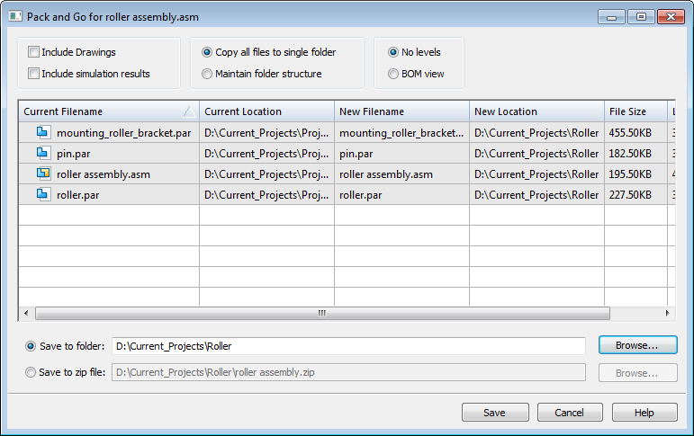

Data sharing and collaboration
Solid Edge offers you many sharing and collaborating opportunities, as explained next.
Xcelerator Share project files
Using Xcelerator Share, you can share your project files with partners, team members, and manufacturers. You can also import and organize your data, send your designs to a viewer where you can view and annotate them, and more.
To use Share, you must be connected to the internet and have an active subscription. You can access Share from Solid Edge or from https://share.sws.siemens.com/.
For more information, see Working with files in Xcelerator Share.
Shared settings and preferences
You can use the Settings and Preferences Wizard or the Solid Edge Options dialog box→User Profile page to capture the information associated with settings and preferences from one machine and deploy that information to other machines.
You can capture registry settings, templates stored on a server, themes in the AppData folder, and customized files located in the Preferences folder.
For more information, see Managing settings and preferences.
Document sharing
You can use the Pack and Go command on the File menu to package a set of related files for sharing with vendors and customers. The command copies and packages a complete set of project documents, so that you can email them or share them with a customer or vendor. In the Pack and Go dialog box, you can set options to:
-
Maintain the existing folder structure.
-
Flatten the folder structure.
-
Include additional files, such as simulation results and draft files.
-
Create or overwrite a .zip file.

For more information, see Define a Solid Edge vault and Share documents from a folder location or .zip file.
Cloud-enabled Solid Edge
Solid Edge Cloud Gateway makes it possible to use Solid Edge from multiple machines. Data can be local or synchronized between desktop and internet users via Xcelerator Share, Dropbox, or other file-sharing software.
To share data and collaborate with others using Solid Edge Cloud Gateway, you must use the cloud-enabled license option, be connected to the internet, and have a WebKey account.
For more information, see the Solid Edge Installation and Licensing guide.
Solid Edge Cloud Gateway provides a dashboard, which you use to:
-
Log in using your WebKey account.
Note:If your license is expired or there is a problem with your WebKey account, you will only be able to access the Solid Edge 2D Drafting with Viewer Mode.
-
Access Solid Edge and Design Manager.
-
Manage individual and group preferences across machines through the cloud.
-
Download and install Solid Edge product updates.